Explore Ubud
A Brief History
Ubud became a cultural centre in upland Bali under Dutch colonial rule and twentieth-century royal patronage of the arts. Palace courtyards, Hindu temples, and rice-terrace landscapes record how Balinese dance, painting, and subak irrigation co-evolved in the Gianyar regency. Monkey forest sanctuaries and rice-terrace walks extend palace dance traditions through Gianyar uplands.
Attractions Map
Top Sights & Activities
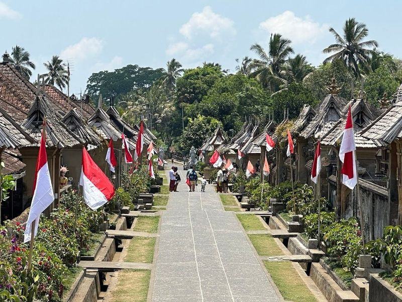
Penglipuran Village
Penglipuran Village, located in the East Bali region of Bangli, is a charming highland community known for its well-preserved traditional layout and culture. The village offers a glimpse into Balinese society's ancient Tri Hita Karana philosophy, with neatly trimmed gardens bordering stone-paved paths that wind through the neighborhood. Visitors can explore the main village area lined with old-fashioned thatched houses featuring arched gateways and manicured lawns.
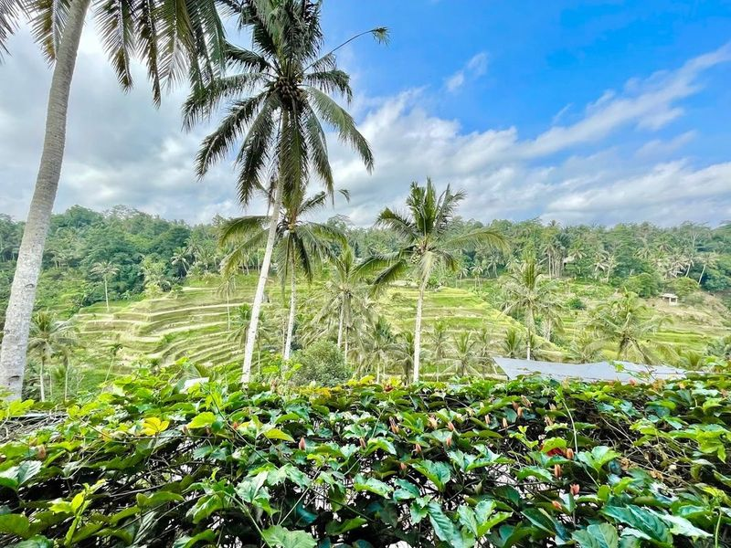
Tegallalang Rice Terrace
Nestled just 30 minutes north of Ubud, Ceking Rice Terrace is a destination that showcases the beauty of terraced rice paddies surrounded by lush greenery. This picturesque landscape is not only a feast for the eyes but also an excellent example of traditional Balinese farming practices, particularly the subak irrigation system, which has been in use since the eighth century.
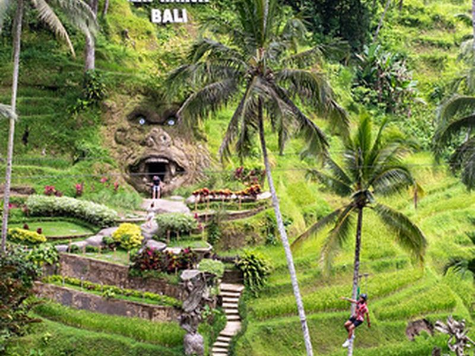
Alas Harum Bali
Alas Harum Bali is listed among principal sites for Ubud within Indonesia. Municipal and regional heritage listings document its place in the historic centre and travellers routes through Ubud. Alas Harum Bali is listed among principal sites for Ubud within Indonesia.
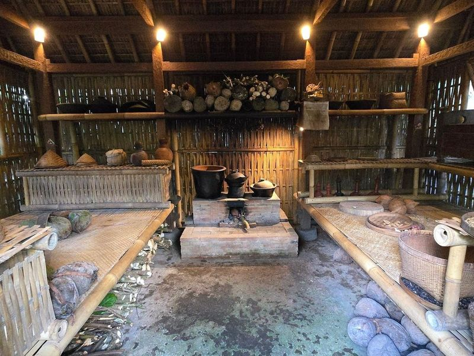
Bali Pulina, Tegallang Gianyar
Bali Pulina is a sprawling venue located near the Tegallalang Rice Terraces, offering lush tropical vegetation and coffee and tea tastings. Visitors can explore the traditional process of making Bali's famous Luwak coffee and enjoy the picturesque coffee plantation. Additionally, outdoor activities such as ziplining through the foliage are available for adventure enthusiasts.
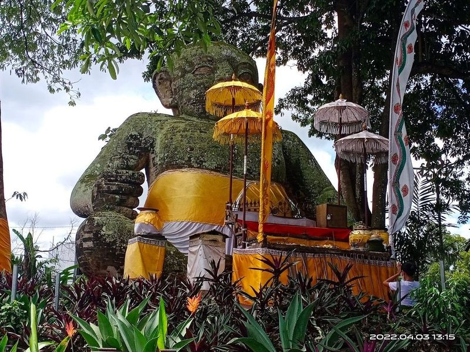
Patung Bayi, Sukawati, Gianyar
The Ubud Art Market is a bustling hub of Balinese craftsmanship, offering a diverse array of unique items such as handicrafts, batik, accessories, and clothing. Visitors can explore the market's offerings and haggle with vendors for one-of-a-kind souvenirs. It's recommended to compare prices across different stalls, negotiate with sellers, and inquire about the authenticity of goods.
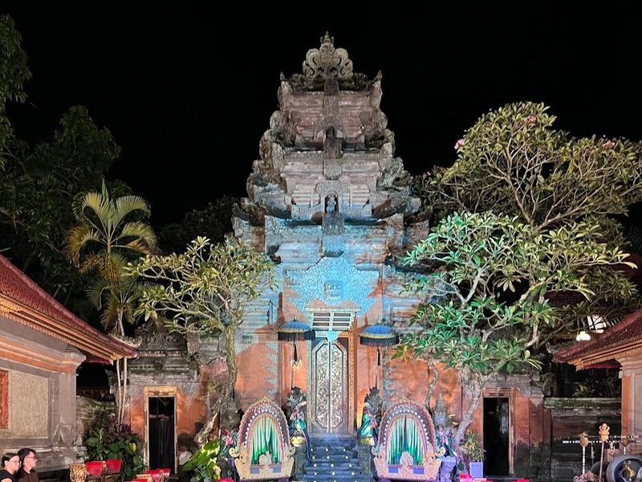
Ubud Palace
Ubud Palace, located on the famous Monkey Forest Road, is a must-visit destination in Bali. The palace features traditional Balinese architecture and hosts enchanting dance performances in its courtyard. Surrounded by lush greenery, it offers a glimpse into the rich cultural heritage of Bali. With its atmosphere and captivating performances, Ubud Palace provides an immersive experience for visitors looking to soak up Balinese culture.
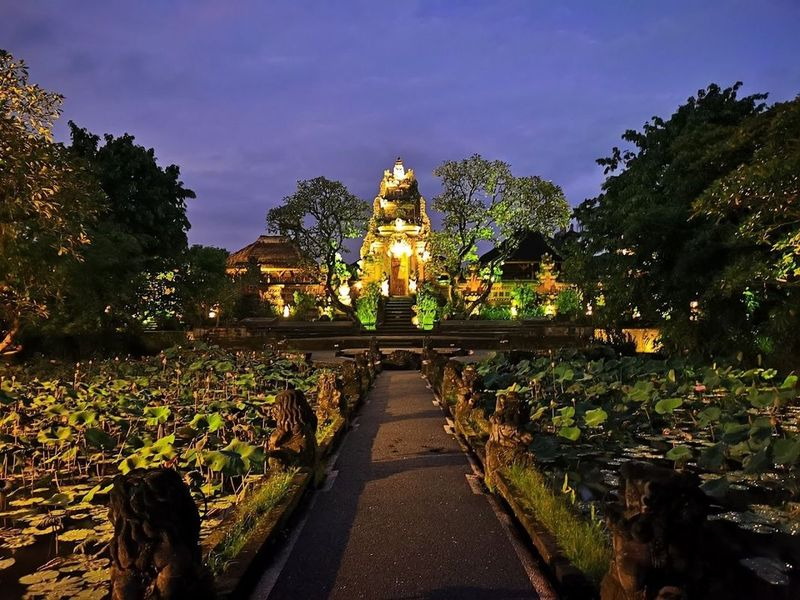
Pura Taman Kemuda Saraswati (Water Palace)
Nestled in the heart of Ubud, Pura Taman Kemuda Saraswati, also known as the Ubud Water Palace, is a Hindu temple that pays homage to the goddess Saraswati. As you stroll along a picturesque pathway over serene lotus ponds, be captivated by its intricate stone architecture and lush surroundings. This tranquil oasis offers an escape from the busy world outside, inviting visitors to immerse themselves in its beauty and spirituality.
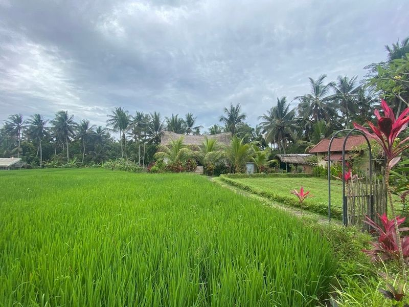
Kajeng Rice Field
Embark on a serene adventure at Kajeng Rice Field, where the lush greenery and tranquil atmosphere provide a perfect escape from Ubud's bustling city life. This picturesque walking path meanders through working rice paddies, originally designed for farmers but now enjoyed by travelers seeking peace and natural beauty. The loop walk is easily accessible, branching off from the main street of Ubud and offering views of both Kajeng Rice Fields and Subak Kuwuk Manis Rice Fields.
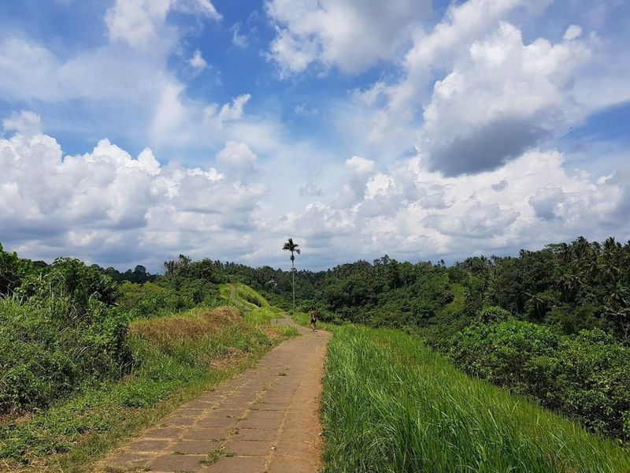
Campuhan Ridge Walk
The Campuhan Ridge Walk is a delightful escape into nature, perfect for those looking to unwind from the hustle and bustle of city life. This scenic trail offers a gentle hike with views of lush hills and valleys, making it an ideal spot for leisurely strolls or cycling. Starting at the historic confluence of the Wos River, this trek allows you to immerse yourself in Ubud's natural beauty while breathing in the fresh air.
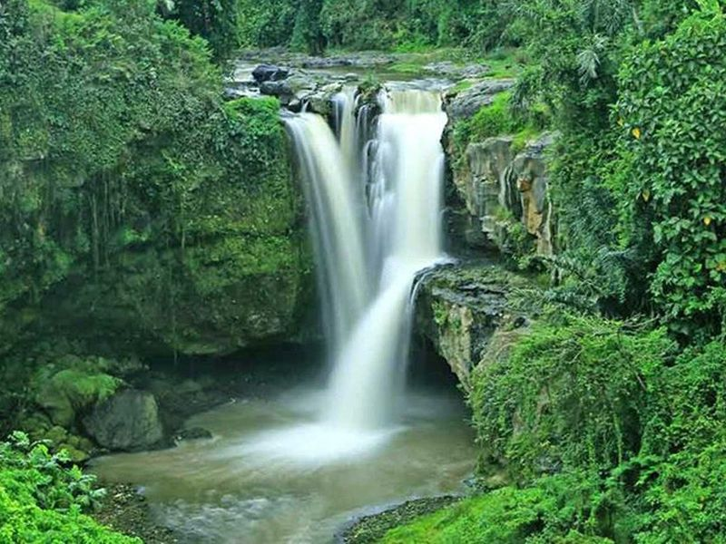
Tegenungan Waterfall
Tegenungan Waterfall is a natural wonder nestled in the heart of Bali, just a short drive from Ubud. This picturesque waterfall cascades through lush jungle surroundings, creating an idyllic setting for visitors. While it’s popular waterfalls on the island and can get quite crowded, especially during peak hours, visiting early in the morning offers a more tranquil experience before the crowds arrive.
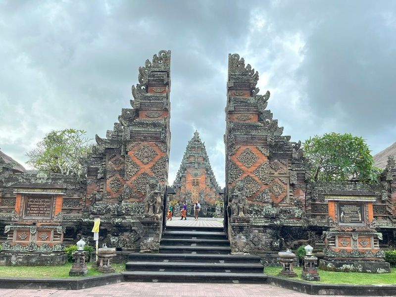
Pura Puseh Desa Batuan
Pura Puseh Desa Batuan, a Hindu temple dating back to the 11th century, is located in the village of Batuan. The temple features intricate stone carvings and sculptures, including a five-tiered Candi Bentar gateway and thatched-roof shrines adorned with floral motifs and statues of Hindu deities. Visitors are required to wear sarongs for entry. The temple also hosts anniversary celebrations known as Piodalan.

Bali Zoo
Bali Zoo is a captivating destination for families and wildlife enthusiasts alike, nestled in a sprawling 12-hectare tropical paradise. Since its inception in 2002, this zoo has been dedicated to animal conservation and education, showcasing over 600 exotic animals from more than 65 species. Visitors can encounter majestic elephants, playful orangutans, and even African lions while enjoying interactive experiences that bring them closer to nature.
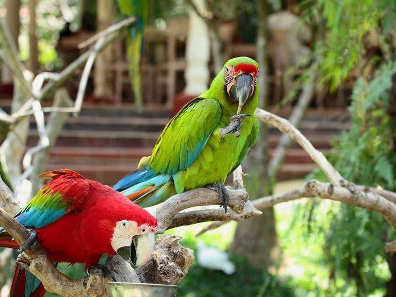
Bali Bird Park
Nestled in the village of Batubulan, Bali Bird Park is a haven for bird enthusiasts. Spanning 2 hectares, it features over 1000 exotic birds and around 250 reptile species, including the renowned Komodo dragon. Visitors can enjoy captivating bird shows, feedings, and displays while taking leisurely strolls through the park's lush surroundings.
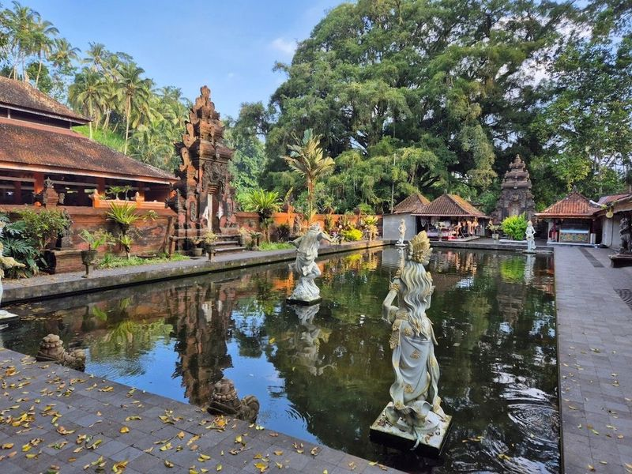
Pura Tirta Empul
Pura Tirta Empul, situated in the Manukaya Village of Tampaksiring, Gianyar, is a significant Hindu temple in Bali known for its holy spring water used for ritual purification. The temple features a bathing area where Balinese Hindus partake in ceremonial purification processes such as melasti and melukat. Tourists are also drawn to participate in these purifying rituals.
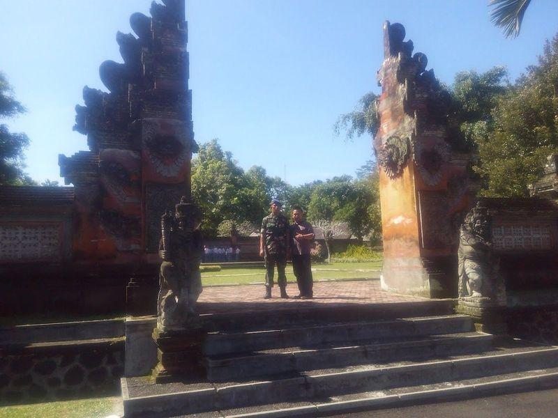
Istana Kepresidenan Tampaksiring
Nestled in the serene hills of Bali, Istana Kepresidenan Tampaksiring serves as a presidential summer palace that reflects Indonesia's rich history. Established by the country's first president, Soekarno, this architectural gem was designed to provide a tranquil retreat for state guests and the presidential family. The complex features four main buildings, including Wisma Merdeka and Wisma Yudhistira, each offering spacious accommodations.
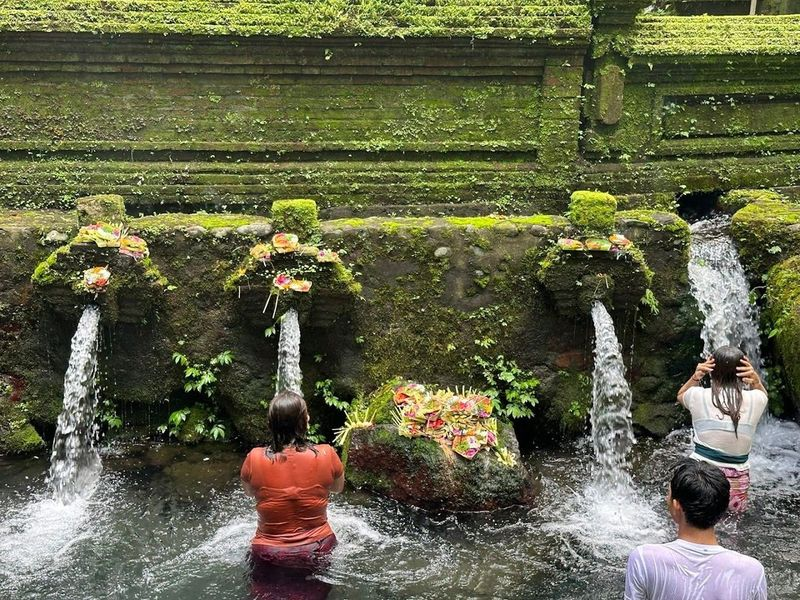
Pura Mengening
Nestled in the Gianyar Regency of Bali, Indonesia, Pura Mengening is a hidden gem often overlooked by tourists. This 11th-century temple is one of Bali's six most important temples and is used for water purification ceremonies. Unlike larger touristy temples, Pura Mengening offers a serene and less crowded atmosphere surrounded by pools, jungle, and a mini waterfall.
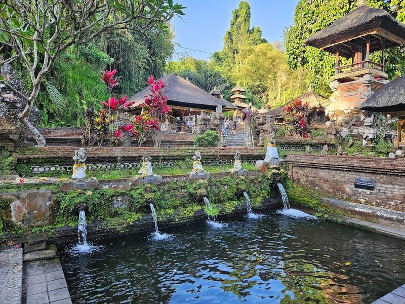
Pura Gunung Kawi Sebatu
Gunung Kawi Sebatu is an ancient 11th-century temple and funerary complex featuring 10 rock-cut shrines carved into cliff niches. Located near Ubud, it is surrounded by myths and theories that add to its allure, such as the legend of a warrior carving intricate reliefs with his fingernails. The temple covers an area of 5,000 square meters and serves as a place of worship for Lord Vishnu in the Hindu religion.
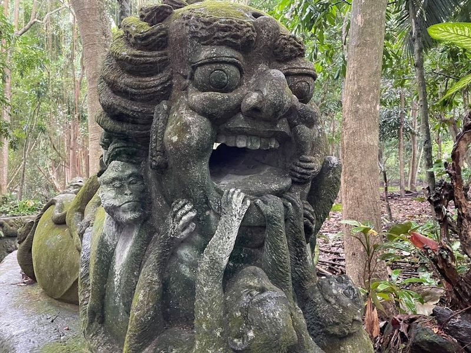
Sacred Monkey Forest Sanctuary
Sacred Monkey Forest Sanctuary is listed among principal sites for Ubud within Indonesia. Municipal and regional heritage listings document its place in the historic centre and travellers routes through Ubud. Sacred Monkey Forest Sanctuary is listed among principal sites for Ubud within Indonesia.
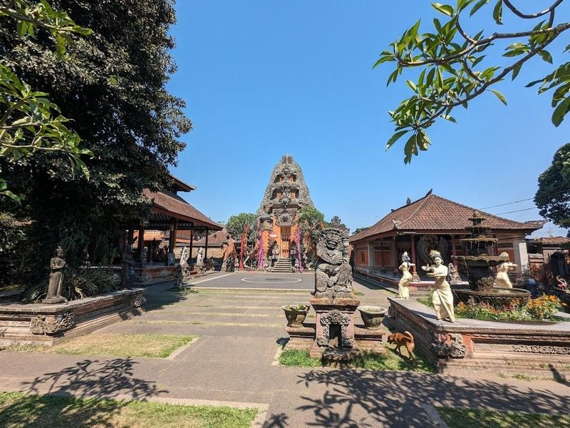
Peliatan Royal Palace
Peliatan Palace is a cultural center and the former home of royalty, nestled at the meeting point of two rivers with cascading streams. Since the 1930s, it has been a haven for local and international artists. The palace is now a hub for fine arts and cultural performances, drawing art enthusiasts, writers, musicians, dancers, and those interested in anthropology and alternative healing.
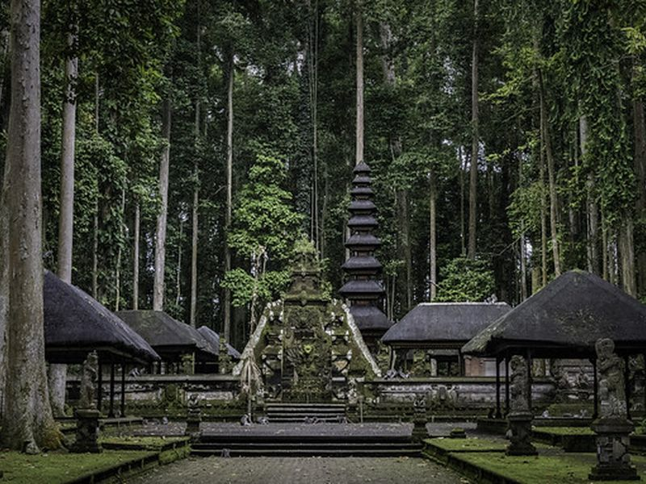
Sangeh Monkey Forest
Sangeh Monkey Forest is listed among principal sites for Ubud within Indonesia. Municipal and regional heritage listings document its place in the historic centre and travellers routes through Ubud. Sangeh Monkey Forest is listed among principal sites for Ubud within Indonesia.
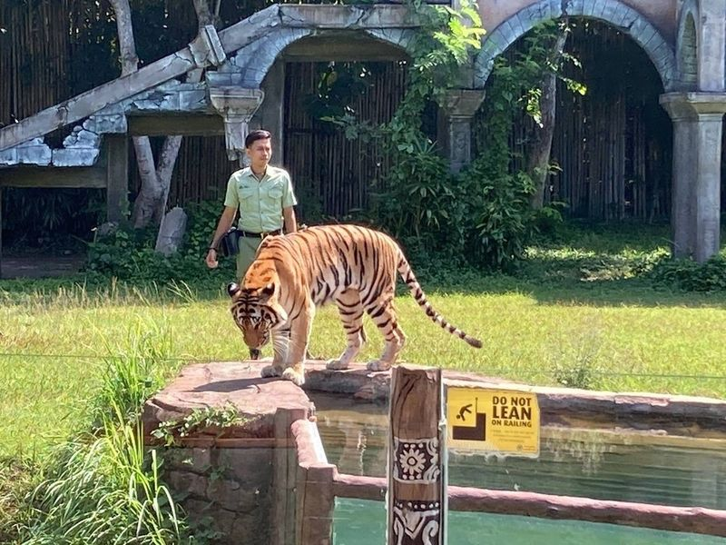
The Amazing Taman Safari Bali
Bali Safari and Marine Park, also known as Taman Safari Indonesia 3, is a family-friendly destination located in Serongga Village, Gianyar Regency, Bali Province. It offers a unique experience by combining wildlife in their natural habitat with Balinese culture. The park serves as a breeding ground for endangered animals and houses over 60 species within large enclosures that mimic their natural environments.
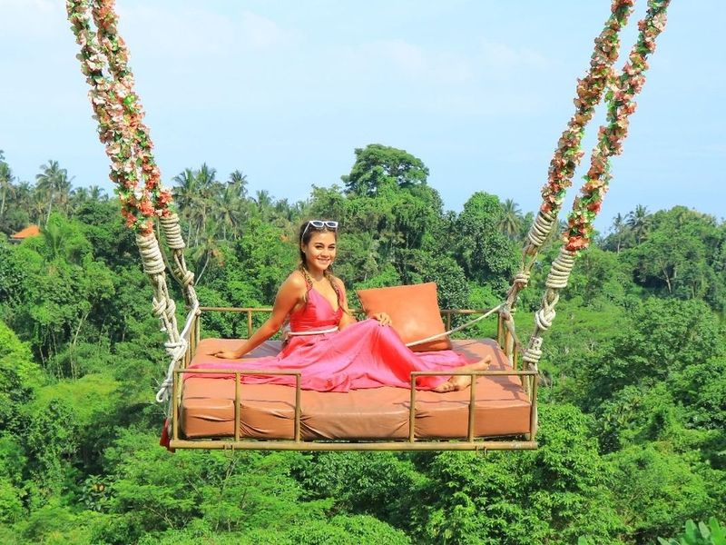
Aloha Ubud Swing
Aloha Ubud Swing is a must-visit destination in Bali for photography enthusiasts. It features beautifully adorned swings surrounded by lush plants and flowers, set against the picturesque backdrop of Tegallalang rice fields and Coffee Luwak Plantation. This unique experience offers plenty of opportunities to capture pictures for your social media feeds and travel albums.
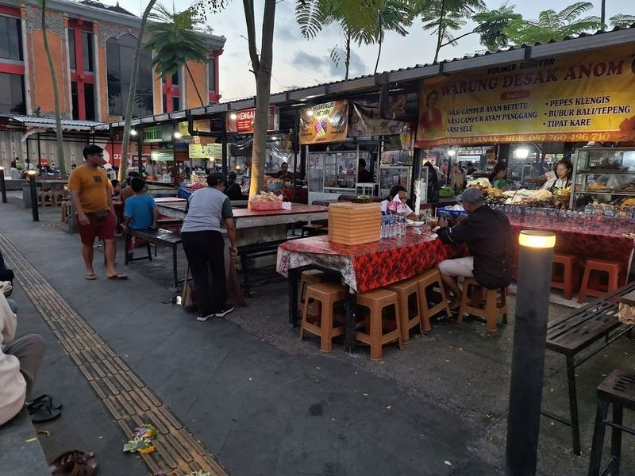
Pasar Senggol Gianyar
Pasar Senggol Gianyar is a night market located on the main strip, offering a wide array of Indonesian street food, clothing, and souvenirs. The bustling market is filled with hawkers and vendors selling local snacks such as Babi Guling, Bakso, Chicken or Lamb Satay, and an assortment of Balinese sweets known as Jaje Bali or Jaje Pasar.
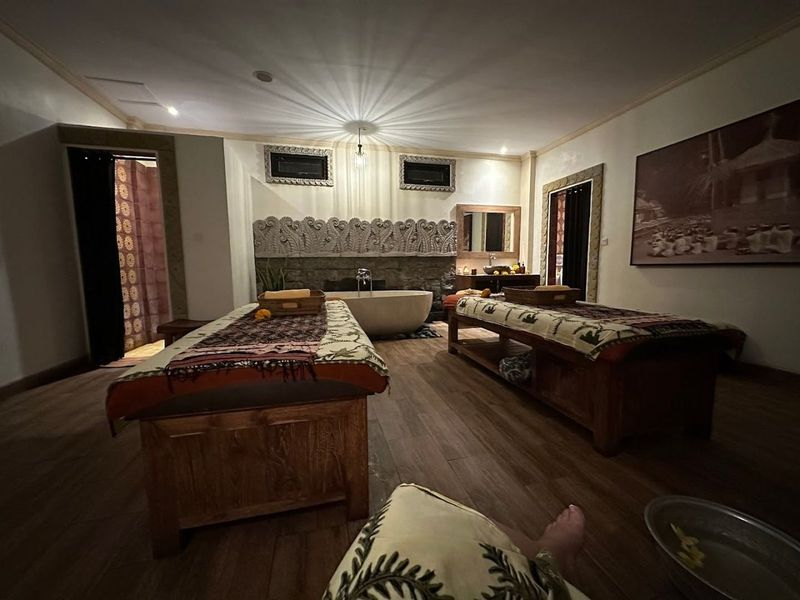
Ubud Traditional Spa
For an authentic Balinese spa experience, look no further than Ubud Traditional Spa. This family-run establishment offers a unique journey to relaxation, starting with complimentary transport to the traditional village of Payogan. Once there, -trained therapists provide classic Balinese massages and reflexology. The spa's signature treatments include the luxurious Ubud Royal Massage and the traditional Rice Farmer Massage, both designed to provide a truly blissful experience.
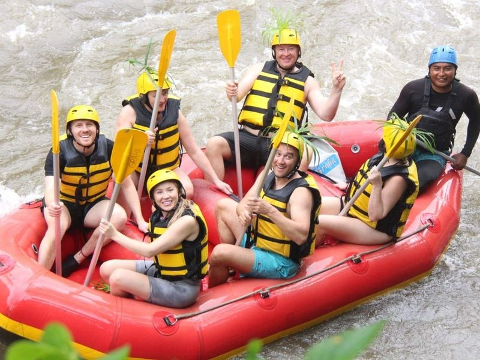
Rafting Ubud Bali Ayung River
Bali Rafting Ayung River offers an efficient and professional service, with early hotel pick-up and a smooth process at the rafting site. The guides are fun and have good English skills. There's a bit of walking down steps to reach the river, so be prepared for that. It's recommended to wear insect repellent and water shoes for convenience. The entire experience is longer than expected but totally worth it once you're in the competitive waters.
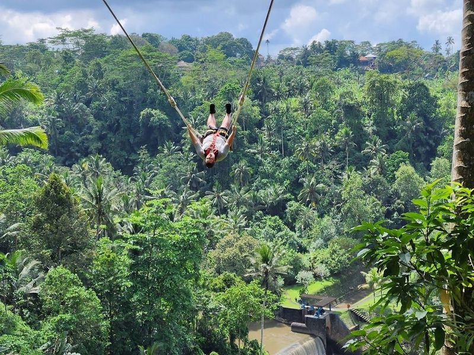
Real Bali Swing
Bali Swing, located in Ubud on the Indonesian island of Bali, is a popular adventure outfit that offers various tours, rafting trips, and rope swings with jungle views. Ubud itself is known for its picturesque setting among rice paddies and steep ravines and has become a hub for arts and culture tourism. The Bali Swing experience is recommended for visitors looking to capture photos while soaring above the jungle, valley, rice terraces, and rivers.

Sukawati Art Market
Sukawati Art Market, also known as Pasar Seni Sukawati, is a and historic marketplace located in Bali. It is renowned as the oldest art market on the island and is situated in a village known for its traditional artists. The market includes items such as apparel, jewelry, souvenirs, sculptures, paintings, and more at great bargain prices.
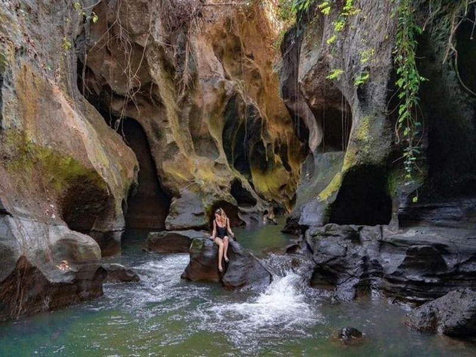
Hidden Canyon Beji Guwang
Hidden Canyon Beji Guwang is a serene natural spot tucked away in Banjar Wangbung, Gianyar City. The area features pools, waterfalls, and intricately carved rocks formed by water erosion. This picturesque location has gained popularity among photographers for its rock formations and color gradients. The canyon is surrounded by steep cliffs reaching approximately 30 meters in height, with a bluish river flowing through it.

Hidden Mini Zoo Bali
The Hidden Canyon Mini Zoo in Bali offers a unique opportunity to witness and interact with exotic wildlife. Located in Guwang Village, Sukawati Gianyar, this mini zoo provides intimate encounters with carefully selected endemic animals. This attraction is perfect for families looking to explore the wonders of Bali. Visitors can touch and hold the animals while capturing memorable photos without worrying about their health or wellbeing.
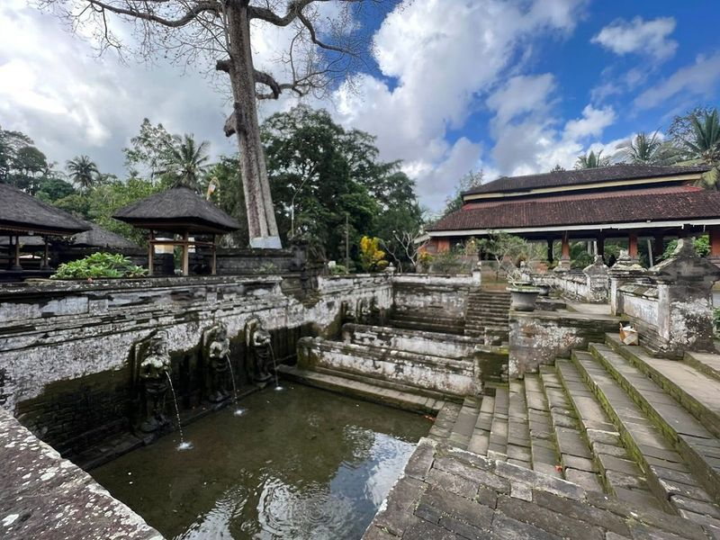
Goa Gajah
Goa Gajah, also known as Elephant Cave Temple, is a significant archaeological site and a popular tourist spot in Bedulu Village near Ubud. Despite its name, there are no actual elephants here, but visitors can admire the stone figure of Ganesh, a Hindu deity with an elephant's head. The cave dates back to the 9th century and features stone carvings of Hindu gods.
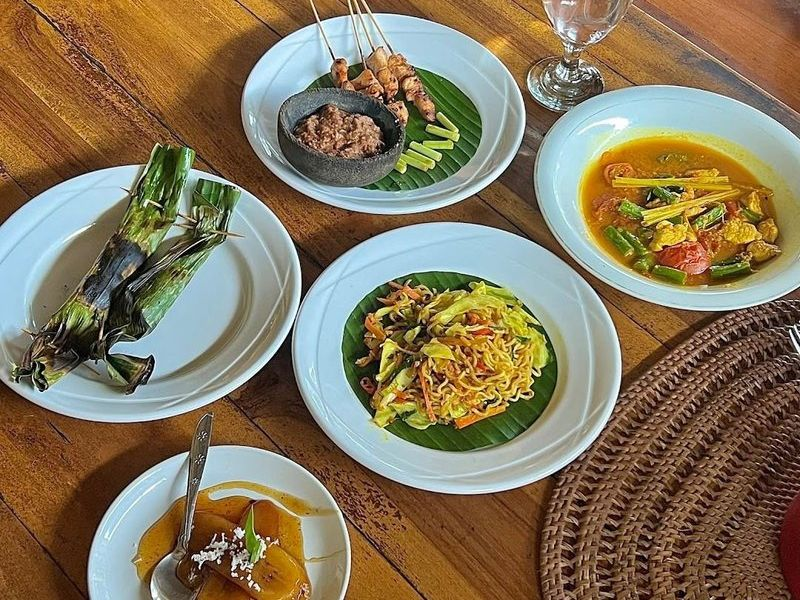
Ketuts Bali Cooking Class
Immerse yourself in the flavors of Bali with Ketuts Bali Cooking Class in Ubud. This popular hands-on cooking class offers a unique experience that includes a pick-up service and a trip to a local market. In the morning class, have the opportunity to explore a traditional market and learn about various spices and herbs used in Balinese cuisine. Afterward, be taken to Tengkulak Village to enjoy the serene ambiance of a rice paddy field.
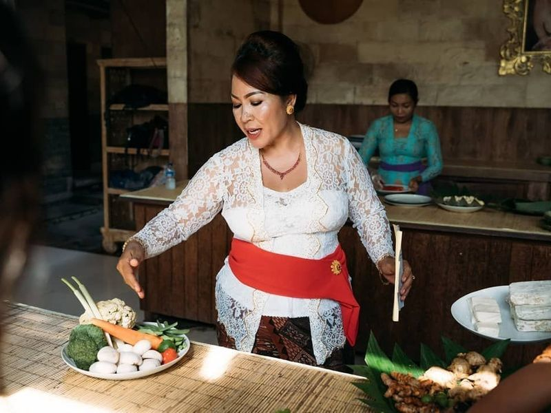
Paon Bali Cooking Class
Immerse yourself in the flavors of Bali with the Paon Bali Cooking Class, located in the quaint village of Laplapan, just north of Ubud. This authentic experience begins with a guided tour of the local market to select fresh ingredients before heading to a kitchen garden for an interactive cooking class. The knowledgeable instructors provide thorough explanations of each step and ingredient, ensuring that participants can easily follow along.